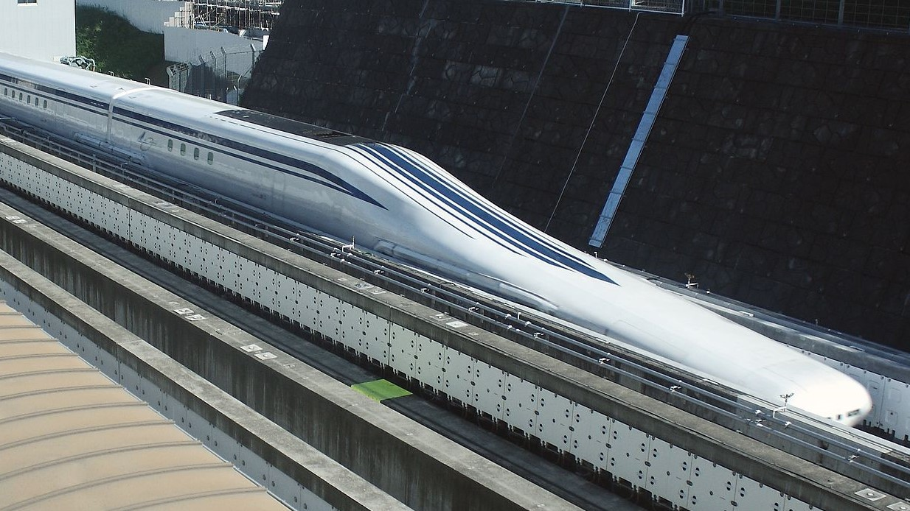
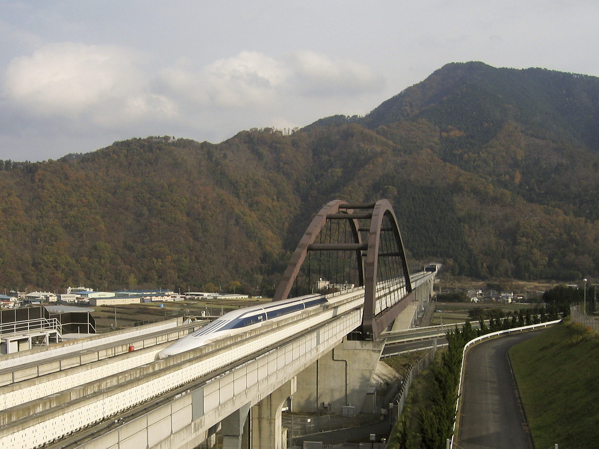

Railways are the most important means of passenger transportation in Japan, maintaining this status since the late nineteenth century. Government policy promoted railways as an efficient transportation system for a country that lacks fossil fuels and is nearly completely dependent on imports.
Rural land near large cities was acquired cheaply by private railway companies from the late nineteenth century, which then built lines that became the backbone of urban transport between the suburbs and cities formed around the railway lines radiating out from metropolitan areas, similar to suburban growth around railways in other nations.
Despite this efficiency, growing affluence and associated car ownership led to road transportation usage increasing to the detriment of rail from the 1960s. The relative share of railways in total passenger kilometers fell from 66.7 percent in 1965 to 42 percent in 1978, and 29.8 percent in 1990, although this still accounted for the largest percentage of the OECD member countries.
Shinkansen is the Japanese Bullet train which runs from north to south in Japan. The first Japanese Shinkansen is "Tokaido Shinkansen" which opened in 1964. There are nine Shinkansen lines in Japan:
You can travel easily from Tokyo to several regions, such as:
And so on.
JR companies are established in 1987 after the division and privatization of JNR (Japan National Railway) and JR means "Japan Railway". There are seven JR companies in Japan:
All JR companies except JR Shikoku and JR Freight have Shinkansen stations.
On September 25, 2013, Prime Minister Abe Shinzō, who was in the United States to attend the General Assembly of the United Nations, delivered a speech at the New York Stock Exchange. Along with unveiling his economic growth strategy, dubbed “Abenomics,” Abe lost no time in alluding to the maglev technology to extol Japan's technological strengths. “Making use of this technology would connect New York and Washington, D.C. in less than an hour,” he stated.

The Super Conducting Maglev (SCMaglev) is a magnetic levitation railway system developed by Central Japan Railway Company and the Railway Technical Research Institute.
On 21 April 2015, a manned seven-car L0 Series SCMaglev train reached a speed of 603 km/h, less than a week after the same train clocked 590 km/h, breaking the previous land speed record for rail vehicles of 581 km/h set by a JR Central MLX01 maglev train in December 2003.
The line's route passes through many sparsely populated areas in the Japanese Alps (Akaishi Mountains), but is more direct than the current Tōkaidō Shinkansen route, and time saved through a more direct route was a more important criterion to JR Central than having stations at intermediate population centers.
Also, the more heavily populated Tōkaidō route is congested, and providing an alternative route if the Tōkaidō Shinkansen were to become blocked by earthquake damage was also a consideration. The route will have a minimum curve radius of 8,000 m (26,000 ft), and a maximum gradient of 4%. This is significantly more than the traditional Shinkansen lines, which top out at 3%.
JR Central announced in December 2007 that it planned to raise funds for the construction of the Chūō Shinkansen on its own, without government financing. The total cost, originally estimated at 5.1 trillion yen in 2007, escalated to over 9 trillion yen by 2011.
Nevertheless, the company has said it can make a pretax profit of around 70 billion yen in 2026, when the operating costs stabilize. The primary reason for the project's huge expense is that most of the line is planned to run in tunnels (about 86% of the initial section from Tokyo to Nagoya will be underground) with some sections at a depth of 40 m for a total of 100 km in the Tokyo, Nagoya and Osaka areas.